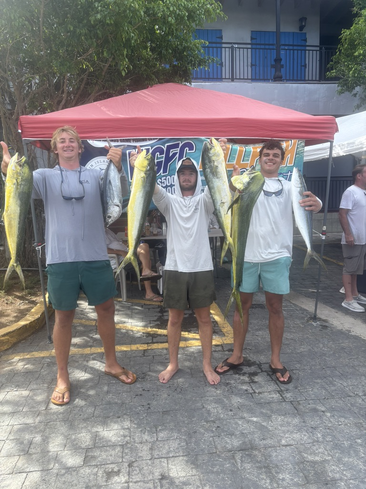
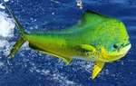
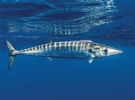
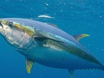
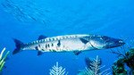
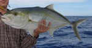
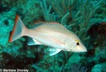
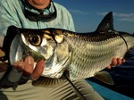
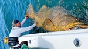
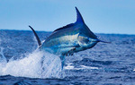

If you are thinking of planning a fun and relaxing vacation than St.Thomas is the place for you! Just a 2 hour and 45 minute flight from Orlando, Florida... St. Thomas is a very reachable destination for U.S citizens. Since St. Thomas is in the U.S Virgin Islands (USVI), you dont even need a passport! To put icing on the cake, once you arrive in St. Thomas, you will be greated with some of the most beautiful beaches and weather the world has to offer! I was fortunate to be able to experience this magnificent place myself and I have so much to share!
I recently went to St. Thomas during the summer of 2025. I went down there with my best friend Henry to visit another one of my best friends who recently moved down there. Insantly upon arrival, we were greeted with beautiful beaches and friendly people, and we instantly knew that we were going to have an amazing trip. My buddy who lives down there works for a fishing charter company and has a beautiful house perched on top of a high mountain. While we were there, we went on two fishing charters. One of them was a marlin tournament but sadly we caught no marlin. The other charter was just the three of us and we just went out for a few hours, caught some fish and had an amazing time. We also did plenty of snorkeling and spear fishing during our free time. It is safe to say that this was one of the best trips I've ever been on.

| Name | Image |
|---|---|
| Mahi-Mahi (dolphin fish) |  |
| Wahoo |  |
| Yellowfin Tuna |  |
| Barracuda |  |
| Bar Jack |  |
| Mohagany Snapper |  |
| Tarpon |  |
| Grouper |  |
| Marlin |  |